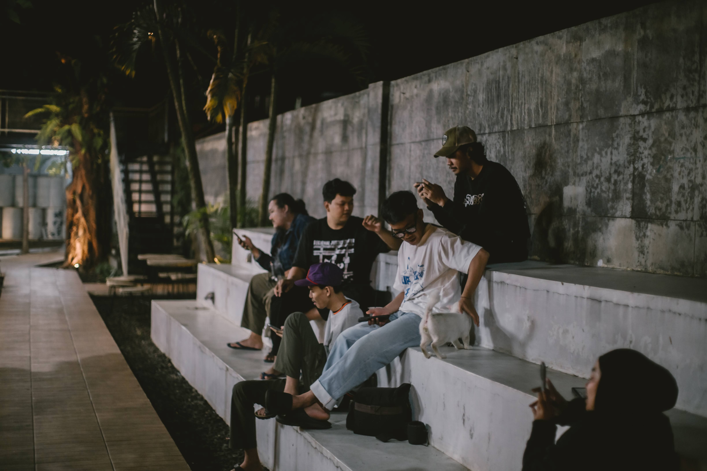

Perjalanan
Setiap perjalanan, entah bersepeda bersama komunitas atau sekadar menuju kedai, layak dimulai dan diakhiri dengan secangkir kopi.

Kopi, komunitas, dan perjalanan yang dibagi bersama.
Our Story
Afdhol Coffee Shop menghadirkan kopi siap minum, kopi kemasan, dan biji kopi dalam satu tempat. Setiap cangkir diracik agar nikmat dinikmati langsung di kedai, sementara kopi kemasan dan biji kopi bisa dibawa pulang untuk diseduh sendiri.
Di sini kopi menjadi alasan untuk berkumpul. Taman terbuka dengan pilar bambu, lampu hangat, dan tribun beton menjadi ruang bagi siapa saja untuk bersantai, berbincang, dan bertemu teman baru.
Dari kebiasaan berkumpul itulah tumbuh berbagai kegiatan: event sepeda, kegiatan komunitas, live music, hingga acara pribadi yang digelar di Afdhol.

Our Philosophy
Setiap perjalanan, entah bersepeda bersama komunitas atau sekadar menuju kedai, layak dimulai dan diakhiri dengan secangkir kopi.
Kopi diseduh dengan teliti, dari espresso hingga biji kopi untuk diseduh di rumah, agar rasanya bisa dinikmati dengan cara masing-masing.
Afdhol ingin menjadi tempat yang membuat siapa pun merasa diterima, bersantai, dan menjadi bagian dari cerita bersama.
What We Do
Espresso, americano, latte, cappuccino, dan racikan khas yang bisa dinikmati langsung di kedai.
Kopi dalam kemasan praktis untuk dibawa pulang, dinikmati kapan saja.
Pilihan biji kopi arabica dan robusta untuk diseduh sendiri di rumah.
Kegiatan sepeda dan acara komunitas yang rutin diadakan, serta live music yang menghidupkan suasana.
Ruang Afdhol bisa digunakan untuk acara pribadi seperti pernikahan. Hubungi kami untuk informasi lebih lanjut.
Tentang Website Ini
Website ini dibuat sebagai proyek Ujian Tengah Semester (UTS) mata kuliah Pemrograman Internet.
Lihat menu kami atau hubungi Afdhol untuk bertanya dan memesan.